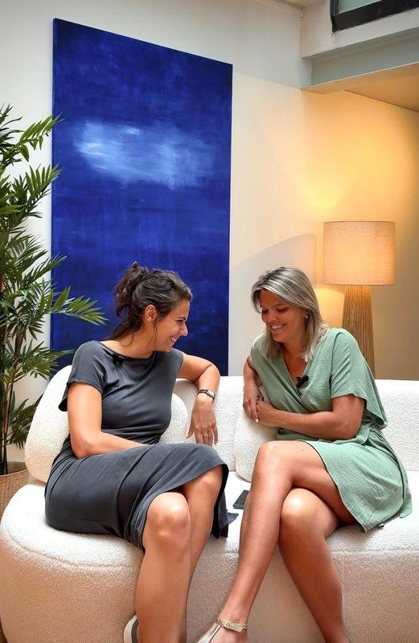

Présente !
l'école de
Jeudi 19 novembre · la citation du jour
« J’habite le possible. »
Emily Dickinson, poème, vers 1862
L'Argent, mois 1 sur 3. Cinq étapes faites sur huit. Tu en es à la semaine 3.
Ton chemin, cette semaine.
✓Semaine 1 · écouter, écrireLa porte du dimanche
✓Semaine 2 · monde HistoireElle avait un compte, pas la main
Cette semaine · agirLe silence après le chiffreUn podcast, ton carnet, puis un geste à poser dans ta semaine.Continuer
Semaine 4 · monde, puis palierCelles qu'on a effacées
Aujourd'hui, deux minutes pour toi.
Rien d'obligatoire. Ce que tu notes ici nourrit ton journal et ton chemin.
Comment tu vas, aujourd’hui ?
« une affaire d’homme, derrière une porte »
C’est toujours vrai ?
La Question ChérieLa lettre de Liberté, Chérie !
Qu’est-ce qu’on doit à la femme qu’on sera ?

À lire aujourd’hui · le nom du médiaLe titre de l’article du jour, validé la veilleNotre regard, en une phrase : pourquoi ça vaut cinq minutes.Lire l’article
Ensuite : La Voix, puis Les Liens. Avec les mondes Philosophie pratique, puis Attention et réseaux.
Revoir ma carte